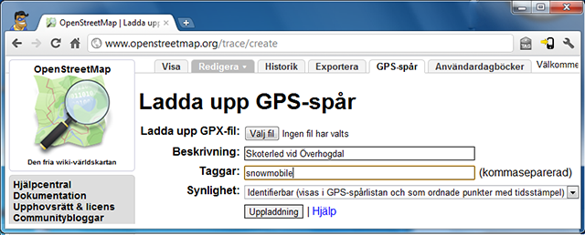

Skoterleder.org
Kartan för skoteråkare, av skoteråkare!
Att skapa skoterleder!
Tanken är att alla ska kunna rita in leder på kartan. Det krävs lite datorvana, men det är inte supersvårt. Här ska jag beskriva arbetssättet!
Översikt över arbetssättet:
- Skapa GPX spår över skoterleden.
- Ladda upp GPX spåret till OpenStreetMap.org
- Rita av GPX spåret i OpenStreetMap och tagga sträckan med information om skoterleden.
- Vänta på att skoterleder.org uppdateras, kan ta någon dag innan din nyinritade skoterled syns. (Oftast snabbare).
Steg 1:

För att rita in skoterleder på skoterlerder.org karan behöver du först och främst ett GPX spår över leden. GPX spåret eller helst spåren (ju fler ju bättre), gör man enkelt med t.ex. en Smartphone. En enkel android telefon har oftast förvånansvärd bra GPS i sig.
Det finns flera appar till Android telefoner, här beskriver jag hur Locus fungera.
Android appen Locus:
Locus är en lite mer avancerad app med möjlighet att visa olika kartor. I denna app kan du också skapa GPX spår. GPX spåren, filerna måste sedan laddas över till dator manuellt.
I Locus cachas kartan automatiskt, vilket är bra om du inte har tillgång till internet ute i skogen/fjället så kommer kartan i alla fall att visas. Så det kan vara bra att zooma och panorera runt på kartan så att kartan lagras. Dock känner inte Locus av uppdateringar av kartan så att det kan vara bra att rensa karta-cachen då och då.
Andra appar är OruxMaps, Andnav osv. Prova vad ni tycker är bäst!
Steg 2:
Att ladda upp GPX spåren till openstreetmap.org är enkelt. Skapa ett konto på OpenStreetMap. Upptill på sidan finns den en flik som heter GPS-spår, gå in där och välj sedan ”Ladda upp GPS-spår”. I formuläret som kommer fram väljer du din GPX fil och skriver in en beskrivning, t.ex. ”Skoter led till Storuvan”, eller vad det nu är. I taggar kan du t.ex. skriva in ”snowmobile”. Under synlighet är det trevligt om ”Identifierbar” välj, men det är upp till dig.
Då finns spåret på OpenStreetMap då återstår bara att rita in leden/vägen/stigen i OpenStreetMap, för GPX spåren syns inte automatiskt som leder osv.
Steg 3:
Rita in skoterleden på OpenStreetMap karta.
OpenStreetMap är alltså en öppen karta där alla kan bidra med det han/hon tycker är intressant. Allt bygger på fritt material, och inget kopieringsskyddat material får användas när kartan skapas. Inte heller får kartor ritas av och t.ex. namn får inte heller läsas från annan karta.
Men det är inget problem får oss eftersom vi använder oss av GPX filer som vi skapat själva!
Det finns flera olika program att använda för att redigera kartan, Potlatch 2 är inbyggt i OpenStreetMap och nås via redigera fliken. Sedan finns det JOSM som är ett externt program som klarar lite mer, och framför allt är det bättre på att zooma flygfoton, bra när man ska kartlägga sjöar m.m.
Här kan du läs hur du ska tagga de olika lederna: Key:snowmobile
Liten film som visar hur du kan jobba med JOSM :
Här finns hela klippet på youtube: Skapa skoterleder i OpenStreetMap med JOSM.